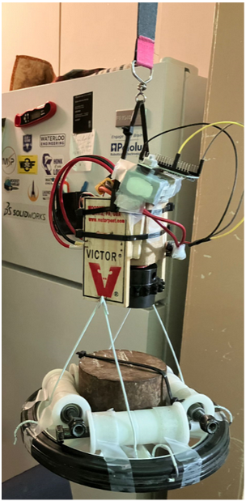

Making a Prototype
Nov 13, 2023
Hello SpinStopians!
They say patience is a virtue, we say patience schmatience.
As we eagerly awaited the arrival of parts for our first proper V1 prototype, the excitement became too much to contain. So, what did we do? We decided to dive headfirst into creating a V0 prototype using whatever parts we had on hand.
This spontaneous decision not only satisfied our curiosity but also gave birth to a tangible proof of concept, a sneak peek into the magic that is SpinStop. Enter our V0 prototype – a testament to resourcefulness and the burning desire to see our ideas come to life.
While waiting for the V1, this initial version served a dual purpose. It not only satisfied our engineering itch but also became an excellent tool to showcase the technology at play. With a simple P controller control loop, our makeshift prototype started to take shape.
Now, it might look a bit like a bomb (engineering aesthetics, right?), but trust us, it works like a charm. We're not just telling you about it - we've got the visuals to prove it. Also, we named it Hector. (Any Breaking Bad fans out there?)

That's a sneak peek into the early stages of SpinStop's physical manifestation. Stay tuned for more updates and surprises.